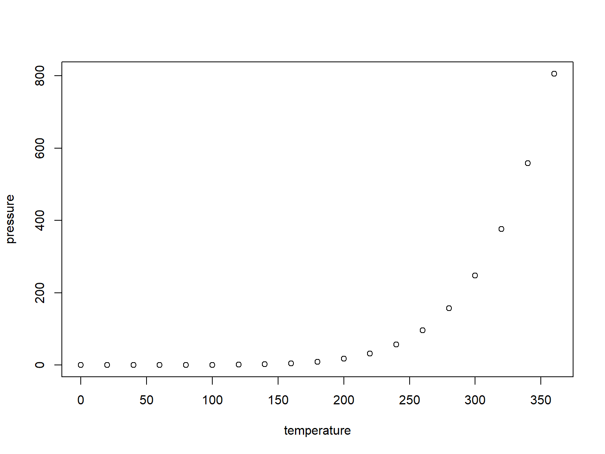

Intro for Seminarledere i STV1010
Gard Olav Dietrichson
25-08-2022
Hva er planen?
- Vi går gjennom det generelle opplegget en gang til.
- Hva skal man gjøre på første seminar?
- Hvordan skal man organisere de videre seminarene?
- Erfaringer fra sist emnet ble holdt
- Oppsummering, tanker, veien videre
Legg inn et kult bilde her
Hva skjer i STV1010
- Seminarene er en læringsressurs for studentene
- Hjelpe dem forstå pensum
- Praktisk bruk av pensum
- “Avmystifisere” emnet
- Studentene sliter ofte med forvirring rundt “hva handler dette om?”
- Være et sosialt knutepunkt
Første Seminar
- Introdusere studentene til livet som student
- Start gjerne med å introdusere deg selv og dine “credentials”
- Her er det viktig at du lar studentene bli kjent med deg
- Si gjerne noe om hva du skriver/skrev Master om
- Poengter at du er fortsatt en
student
- Du sitter ikke med alle svarene
- Men du kan hjelpe dem langs veien til å finne dem
Et Eksempel: Min slide fra i fjor
- Gard Olav Dietrichson (25)
- Fra Kolbotn
- Tok Bachelor her på instittutet med støtteemner i Sosiologi, går nå 3. semester på Masterprogrammet
- gardod@student.sv.uio.no
Et Eksempel: Min slide fra i fjor
- Interesseområder
- Hovedfokus på nasjonal politikk i:
- Japan
- Taiwan
- Israel
- Kvinnelig representasjon
- Valgdesign
- Rational Choice institusjonalisme
- Diskursanalyse
- Kulturanalyse
- Hovedfokus på nasjonal politikk i:
- Skriver Master om kjønnskvoter i MMM systemer
Hvorfor?
- Disse introduksjonsmomentene gjør ofte studentene nysgjerrig på hva du driver med
- Gir gode muligheter til å bryte ned barrierer mellom seminarledere og student
- Vi er opptatt av et litt mindre formelt forhold mellom seminarleder og student
Sette forventninger
- Gjør tydelig hva du kan hjelpe med
- Men vær tydelig på at du ikke kan alt
Eksempel Forventninger fra mine slides i fjor
Jeg er åpen til spørsmål av alle slag, og dere kan sende en e-post på canvas eller på studentmailen min
Jeg vil gjøre mitt beste for å være tilgjengelig fysisk mellom timene samt før og etter seminarene.
Men vær klar over at det kan hende jeg refererer dere til en annen plass
Ikke se på meg som en absolutt autoritetsfigur
Har dere noen ting dere forventer av meg?
Forventninger forts.
- Viktig å starte med hva de kan forvente av deg
- Gjøre det klart at du er der for dem
- Deretter poengter hva du forventer av dem
Forventninger av Dere (Eksempel)
Si ifra hvis dere ikke kan komme til seminaret
Delta aktivt i diskusjonene
- Ha en viss grad av utviklingsmessig solidaritet
Levere oppgaver i god tid
Hva forventer dere av hverandre?
Ressurser dere bør gjøre dere kjent med
Canvas
Excel
- For godkjenningslister
Power Point
- Eller Rstudio hvis du er nerd
Canvas
For de med flere grupper, viktig å lære at du kan importere layouts
Det finnes noen ferdige layouts som kan importeres, bruk gjerne noen av dem
studentvisning kan la deg se ting før det publiseres
Ukentlige leveringer lages i “oppgaver” mappen
Formatter gjerne moduler eller liknende for å organisere arbeidet
Om dere velger å laste opp alle slides er litt opp til dere selv
Excel
- Mitt tips er å føre godkjenningslistene i Excel
- Husk at oppmøte og kvalifiseringsoppgaver er del av kravet

Power Point
Du kan finne powerpoint maler på UiO sin hjemmeside
- Jeg kan ikke hjelpe med dem, siden de ikke funker for meg
Jeg har en PP mal som dere gjerne kan bruke, sett i eksemplene
Føl dere fri til å lære Beamer magi også
Det viktigste er at dere har noe å gå på som gjør at presentasjonene ikke ser for ille ut
Viktig med et visst nivå at dekorum
La oss ta en liten chat om første seminar gang
- Elin har lagt ut noen forslag til slides som bør være med
- Samt bulletpoints til alle poengene sine
- Ta en titt, også blir vi enige om hva som er viktigst å ta med
Planlegging
Slide with R Output
## speed dist
## Min. : 4.0 Min. : 2.00
## 1st Qu.:12.0 1st Qu.: 26.00
## Median :15.0 Median : 36.00
## Mean :15.4 Mean : 42.98
## 3rd Qu.:19.0 3rd Qu.: 56.00
## Max. :25.0 Max. :120.00Slide with Plot
